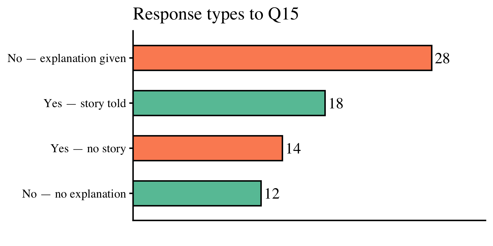

| Speaker | Annotation |
|---|---|
| Carrie | greetins - bless |
| caller (Isus) | yeah - Isus |
| Carrie | Isus |
| caller (Isus) | wa gwaan |
| Carrie | nut'n much, how you doin' |
| caller (Isus) | nut'n, mi de yah ((inaudible)) |
| Carrie | yea man right now is a good time come forward |
| caller (Isus) | alright uhm what address are you |
| Carrie | number forty Houston |
| caller (Stan) | ((inaudible)) but you have fi get him - very important |
| Carrie | right [ ] okay so Sanchez right away dey wa- dey waan link up wid him |
| caller (Stan) | ((inaudible)) dey want Sanchez |
| Carrie | mi link him but mi figet fi ask him |
| Carrie | ((to Lars)) once I speak to an elder who speaks Patois, no English will come out |
Introduction
Overview of this lecture
- The goals of sociolinguistic fieldwork, then and now
- Two transformations since Labov’s pioneering work
- Case Study I — Jamaicans in Toronto: the outsider fieldworker
- Case Study II — Home to Texas: the “cringe question”
- Conclusions and methodological implications
The sociolinguistic interview: a foundational tool
- Central data-elicitation method since Labov’s Lower East Side study (1966)
- Goal: access the speaker’s vernacular — the style used in casual, unmonitored speech
- Labov’s key insight: social stratification of language is most clearly visible in the vernacular
- The interview thus tries to create conditions in which the vernacular can emerge
“The style which is most regular in its structure and most systematic in its relation to social stratification is the vernacular — the style in which the minimum attention is paid to speech.” (Labov 1972a: 208)
Observer’s Paradox
- The fundamental dilemma of sociolinguistic fieldwork (Labov 1972)
- We want to study how people speak when not being observed — but the act of observation changes how they speak
- No escape from the paradox: the interview event is created by the researcher
As De Fina & Perrino (2011: 4) put it: “the interview was seen more as a context to be erased than as an interactional event whose specificity should be understood, and perhaps even exploited.”
Labov’s toolkit: the danger-of-death (DoD) question
“Have you ever been in a situation where you thought you were going to be killed?”
The underlying logic: Speakers cannot simultaneously manage intense emotional recall and monitor their speech style.
Are Labov’s goals still relevant today?
- Yes — but the toolkit to achieve them needs updating
- Sneller & Barnhardt (2023): the sociolinguistic interview must be embedded in pop-cultural context to generate natural speech
- Critiques of DoD: ethical concerns (trauma elicitation), effectiveness doubts (Milroy 1987, Butters 2000)
- The interview as an interactional event in its own right (Johnstone 2006, Schilling 2008, De Fina & Perrino 2011)
My claim: Two major societal transformations since the 1960s have made Labov’s original methods increasingly inadequate.
Two Transformations
Transformation I
Connectivity and dialect leveling
- Since the 1960s: exponential growth in speaker mobility and connectivity
- Both face-to-face (migration, travel, urbanization) and virtual (social media, streaming, online community)
- Speakers are no longer embedded in a single, bounded speech community
- Greater contact with other varieties → dialect leveling (Trudgill 1986, Kerswill 2003)
Consequence for fieldwork: The bounded, locally coherent vernacular that Labov presupposed is increasingly hard to find — or may not exist.
The unbounded speech community
- Labov’s Lower East Side speakers: dense, multiplex social networks (Milroy 1980)
- Today’s urban speakers: weak-tie, geographically dispersed networks
- Diaspora communities, transnational families, digital communities of practice
- The notion of a home vernacular is destabilized
Speakers today orient to multiple, overlapping reference varieties — not a single local target.
Transformation II
Semiotic complexity and digital media
- Digital media have produced an infinitely richer semiotic landscape
- Performativity: speakers can style-shift, voice characters, play with personae — online and off
- Intertextuality: memes, genre-mixing, pop-cultural reference as everyday talk
- Intermediality: language, image, sound, and video are routinely combined
Speakers have developed elaborate multirepertorial and intermedial competence — they can do far more with language than their parents could.
A reformed semiotic world
What has changed for speakers in western urban communities:
- Reformed politeness norms — directness, anti-deference, irony as default
- Heightened identity politics — speakers are highly aware of the social meanings of linguistic choices
- Ontological instability (postmodern sense) — the authentic “true self” is a fiction; performance is the norm
- Tolerance for, and enjoyment of, ambiguity and roleplay in conversation
The problem: Labov’s DoD question assumes a speaker who has a stable, unified self to “reveal.” That speaker is increasingly rare.
Why Labov’s first-hour toolkit struggles today
| Labov’s assumption | Contemporary reality |
|---|---|
| Bounded speech community | Dispersed, mobile networks |
| Stable vernacular style | Fluid, multirepertorial identity |
| Emotional authenticity via trauma | Ironic detachment; identity awareness |
| Low self-monitoring = true vernacular | Self-presentation is always performative |
| Interview as context to erase | Interview as interactional event |
Case Study I
Jamaicans in Toronto: the outsider fieldworker
Research context:
- Ongoing ethnographic and sociolinguistic study of the Jamaican diaspora community in Toronto
- Primary focus: vocalic variation, dialect contact, and repertoire management
- Fieldwork using sociolinguistic interviews: audio and video recording
The core problem:
Lars Hinrichs is a white, German-born academic — an outsider on multiple dimensions of identity relative to the community.
The fieldworker effect in diaspora contexts
- The choice of video vs. audio recording alone shapes speaker style (Hinrichs 2018)
- Video increases awareness → performative quality → audience design (Bell 1984; 2001) for the camera
- But: this performativity is informative, not merely noise
- Speakers orient their speech to the fieldworker’s outsider identity through style-shifting and intertextual performance
Rather than trying to erase the fieldworker effect, we can embed it reflexively into our understanding of the data. The interview as co-constructed event reveals the speaker’s full idiolectal repertoire, not just the vernacular.
Clip | Carrie on the phone
Key finding: performativity is data
- Speakers in the Toronto Jamaican community actively perform for the researcher
- Style-shifting between Jamaican Creole and Canadian English is not random — it is audience-designed
- The “observer” triggers code-switching that reveals the speaker’s range of competence
- This is information that a same-community fieldworker might not elicit
Methodological implication:
The observer’s paradox is not merely a problem to be minimized — it can be turned into an analytic resource.
Reflexivity as a methodological stance
Based on Hinrichs (2018) and the broader Toronto fieldwork:
- Fieldworker identity shapes data in systematic, analyzable ways
- Reflexive embedding of that effect enriches interpretation
- The sociolinguistic interview, recorded with video, elicits all of a speaker’s styles — including highly performative ones
- In diaspora communities especially, “performing for the outsider” can reveal hybrid, intertextual repertoires that would remain hidden otherwise
Case Study II
Home to Texas (H2TX)
- Large-scale decentralized fieldwork project
- Over 70 communities and municipalities — rural towns, suburbs, cities
- Key advantage: student fieldworkers have natural community access
- Observer’s paradox still operative
- Fieldworker must manage community skepticism
Many home communities are deeply ambivalent toward UT Austin — the university is seen as a driver of brain drain from small towns.
Clip: DelRio_DC_07022024
| Speaker | Annotation |
|---|---|
| Interviewer | This is [INTERVIEWER NAME {Daniel Carillo}]. Today is July 2nd, 2024, and I'm here in Del Rio, Texas for an interview with one of our community members. Before we begin, I'd like to get verbal consent for the form that we went over. [PASSAGE OMITTED] |
| Participant | ...uh, customs, that kind of stuff right now, today. |
| Interviewer | What would you say are the strengths of this community? |
| Participant | [LONG PAUSE] I think the people who started it had to be strong and resilient. Uh, I hope it continues that way. I wish more I wish more people like [INTERVIEWER NAME {Daniel}] would stay here. |
| Interviewer | Um, what would you say are some of the benefits of living in this community? |
| Participant | [LONG PAUSE] It's kind of- you can make the kind - it's a good lifestyle if you make it that way. Uh, you have a chance. You don't have - the crime isn't that bad if you watch where you're going. Uh, it's getting worse, though, with what's going on on the border. Uh, the education system, it's there if you want it. If you want to be a student, you can be one. If you don't, it won't be there for you. Uh, the people [THUMP OUTSIDE]? That's- |
Interview protocol (H2TX)
A — The community: strengths, weaknesses, and change (“place talk”; Schegloff 1972) (open-ended)
B — Multilingualism: personal background and attitudes (survey questions and Likert scale responses)
C — Open-ended conversation questions (includes Q15)
D — Reading passage
The “cringe question”
Inspired by Sneller & Barnhardt (2023) on pop-cultural elicitation:
Interview question 15: “Did you ever tell a story about another person, thinking the other person was not near you, but then turned around and saw that person was standing right next to you? Could you tell me about that? What happened?”
The hypothesis: A relatable, mildly embarrassing social situation (a cringe scenario) would generate:
- Natural, emotionally engaged narrative
- Phatic communion (Malinowski 1923) between fieldworker and speaker
- Casual, unmonitored speech — the vernacular
Findings: did the cringe question work?

Clip | Response subtypes: No | Donna_AR
| Speaker | Annotation (Donna_AR_07192024) |
|---|---|
| Interviewer | ...but then turned around and saw that person was standing right next to you? |
| Speaker | No, I never, I try not to talk about people. I respect everybody. |
| Interviewer | A lot of people think of the 1990s as a golden decade of pop music. Do you agree? |
Clip | Response subtypes: No | Beaumont_MM
| Speaker | Annotation (Beaumont_MM_06252024) |
|---|---|
| Interviewer | Did you ever tell a story about another person thinking the other person was not near you, but then turned around and saw that person was standing right next to you? Could you tell me about this? What happened? |
| Participant | Never. Never. If I got something to say about you, or this is like I said what I was talking about, if I got something to say I'll talk to you. I've never experienced nothing like that in my life. Because if I meet you, and say something happened to me and you or something. No, I'm not going to discuss it with nobody else. And if I don't like it I'll come pull you to the side, but I never experienced that. I never did, never that I can recall in 60 years have I've been here. |
Summary
- Of the “no” answers, most avoid “trouble” by offering explanations (no memory, personal values), a laugh, “No, ma’am”, or similar.
- Of the “yes” answers, many failed to provide stories, offered brief jokes, or betrayed discomfort.
- Phatic communion around CT was rarely attained.
- If it did, the conversational object was something else, e.g. the personal values.
What happened when speakers said “no”
- Many speakers declined to engage with the scenario
- Common responses: “No, ma’am,” polite laughter, brief disclaimers
- Some offered explanations grounded in personal values (“I don’t talk about people behind their backs”)
- In small-town Texas communities: strong norms of propriety and directness — gossip framing is uncomfortable
The conservative cultural orientation of many H2TX communities actively inhibits the phatic engagement the question was designed to trigger.
What happened when speakers said “yes”
- Many “yes” responses did not yield a narrative — just a confirmation
- Some produced brief anecdotes without emotional engagement
- Genuine phatic communion around cringe content was rarely achieved
- Where it did occur, it was driven by pre-existing rapport, not the question itself
The key variable: political and cultural conservatism predicts stronger avoidance of the cringe scenario.
Conservative self-positioning and the interview
- H2TX interviews coded for explicit political alignment and cultural conservatism (via “place talk” segments)
- Conservatism correlates negatively with cringe question engagement
- Rural communities show higher conservatism density
- These same communities show lower rates of productive Q15 responses
Why this matters:
The cringe question presupposes a pop-cultural orientation — irony, self-exposure, shared entertainment. Not all communities share this orientation.
Comparing the two transformations in the field
| Toronto Jamaican diaspora | Rural Texas H2TX | |
|---|---|---|
| Connectivity | High — transnational networks | Moderate — local but mobile youth |
| Semiotic complexity | Very high — Creole/English, mediatized | Lower — but still reformed norms |
| DoD question | Would raise ethical issues | Would seem intrusive/odd |
| Fieldworker identity | Marked outsider — shapes data | UT Austin = cultural outsider |
| Key finding | Performativity as analytic resource | Cultural conservatism blocks phaticity |
Conclusions
Conclusions
- Labov’s goals — eliciting vernacular speech, managing observer’s paradox — remain the right goals.
- But two transformations (connectivity/dialect leveling; semiotic complexity) have reshaped the social context of the interview.
- The “true vernacular” of a bounded speech community is increasingly a fiction — speakers are multirepertorial and mobile.
- Labov’s elicitation toolkit (DoD question, narrative prompts) is no longer reliable in contemporary western communities.
- The fieldworker’s identity and relationship to the community must be reflexively embedded, not minimized.
Key takeaways
- Rethink the observer’s paradox: treat the fieldworker effect as analyzable data, not noise to be eliminated.
- Design for phaticity (Sneller & Barnhardt 2023; Hinrichs 2025): questions should generate conversational engagement, not just narrative.
- Know your community’s semiotic norms: pop-cultural elicitation tools (like the cringe question) assume a specific cultural orientation.
- Embrace performativity: in diaspora and mediatized communities, the full repertoire is the object of study.
- Train fieldworkers deeply in the art of follow-up questions and conversational flexibility.
Looking ahead
- The sociolinguistic interview will remain indispensable — but it must evolve
- Future directions: digital/asynchronous data collection; community-participatory methods; auto-ethnographic approaches
- The “mediatized urban world” offers new methodological possibilities as well as challenges
- Key question: can we design interview tools that work with postmodern semiotic complexity rather than against it?
The observer’s paradox was never really about the observer. It was always about the relationship between researcher and community — and that relationship has never been more complex, or more interesting.
Thank you.
e-mail: larshinrichs@utexas.edu
www: https://larshinrichs.site
References
Bell, A. (1984). Language style as audience design. Language in Society, 13(2), 145–204.
Butters, R. (2000). Conversational anomalies in eliciting danger-of-death narratives. Southern Journal of Linguistics, 24, 69–82.
De Fina, A. & Perrino, S. (2011). Introduction. Language in Society, 40(1), 1–10.
Kerswill, P. (2003). Dialect levelling and geographical diffusion. In D. Britain & J. Cheshire (Eds.), Social dialectology. John Benjamins.
Labov, W. (1966). The social stratification of English in New York City. Center for Applied Linguistics.
Labov, W. (1972a). Sociolinguistic patterns. University of Pennsylvania Press.
Labov, W. (1972b). Language in the inner city. University of Pennsylvania Press.
Sneller, B. & Barnhardt, J. (2023). Pop-cultural context in the sociolinguistic interview. Language Variation and Change, e12484.

Lars Hinrichs (UT Austin) | Université du Luxembourg | March 2026